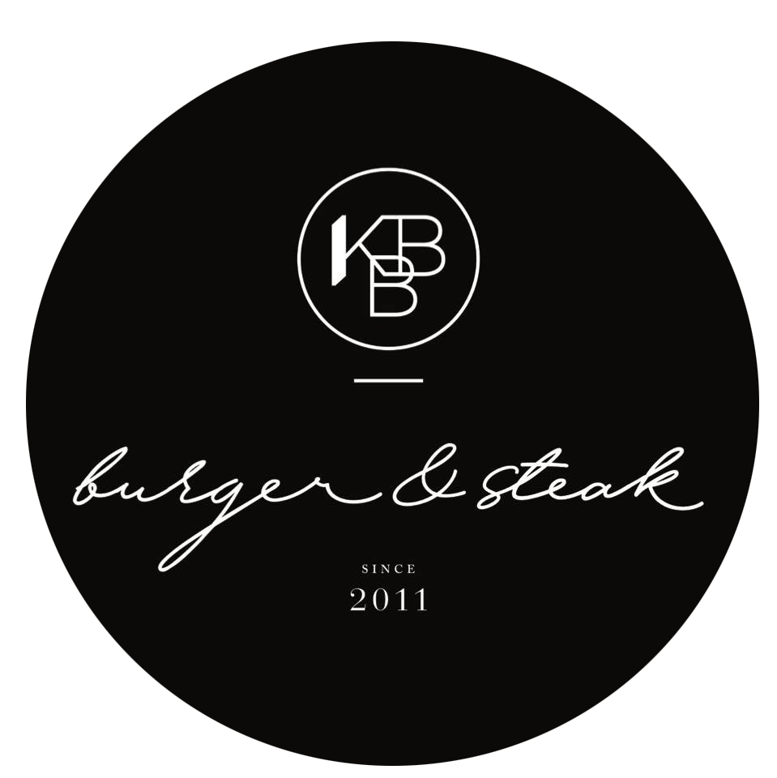

KBB Burger & Steak
We make sure every bite you took is excellent.
About KBB Burger & Steak
At KBB Burger & Steak, we’re serving up more than burger and steak. In fact, KBB Burger & Steak Famous (recipe) is one of our unexpected specialties. Reminiscent of butcher shops back in the day, each slow-smoked, sizzling prime chop measures seven-fingers high. Our signature recipe, that we have perfected for more than four decades, is rubbed with a secret blend of seasonings, cured and roasted on a rotisserie with pecan wood for up to six hours before it’s topped with KBB Burger & Steak signature herb-garlic butter, then carved tableside.
